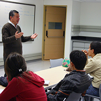
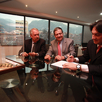
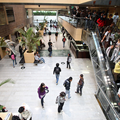

Secretaría General
Recopilación de las principales decisiones y temas tratados por el Comité Directivo y el Consejo Académico, entre el 22 de agosto de 2013 y el 20 de noviembre de 2013. Así mismo, se incluyen algunos hechos de interés.
|
| Boletín electrónico de la Universidad de los Andes - No. 35 - Diciembre de 2013 Secretaría General |
| Carta del Rector al Consejo Superior No. 67-13 Recopilación de las principales decisiones y temas tratados por el Comité Directivo y el Consejo Académico, entre el 22 de agosto de 2013 y el 20 de noviembre de 2013. Así mismo, se incluyen algunos hechos de interés. |
| ASUNTOS ADMINISTRATIVOS | |||||||||||||
|
Nombramientos:El Consejo Superior aprobó los siguientes nombramientos:
La Rectoría aprobó los siguientes nombramientos:
|
||||||||||||
|  | Reforma al Estatuto ProfesoralEl Comité delegado por el Consejo Académico, que preside el vicerrector académico, José Rafael Toro, elaboró un primer documento de diagnóstico que fue enviado a los profesores con el propósito de sentar las bases de la discusión. Los profesores de todas las facultades participaron activamente y enviaron sus propios documentos de diagnóstico. En este momento el Comité se encuentra revisando la información, hará los ajustes al diagnóstico inicial y en los próximos meses presentará al Consejo Académico la propuesta de reforma. |
||||||||||||
|  | Vivienda estudiantilEl Rector, previa autorización del Comité Directivo, presentó a QBO Constructores una carta con la cual Uniandes manifiesta su intención de participar en el proyecto de vivienda estudiantil contiguo al campus. El propósito es aprovechar una iniciativa privada de desarrollo inmobiliario, que busca la permanencia de los estudiantes en el centro de la ciudad para generar de esta manera las dinámicas propias de las universidades internacionales. |
||||||||||||
|  | Aprobación del Reglamento para Bolsa de EmpleoEn cumplimiento del Decreto 722 del año 2013, mediante el cual se reglamentó la prestación del Servicio Público de Empleo y se definió a las bolsas de empleo como prestadoras de este servicio, la Universidad elaboró un Reglamento para que por intermedio del Centro de Trayectoria Profesional (CTP) se regule la prestación de este servicio a sus egresados. |
||||||||||||
|
|||||||||||||